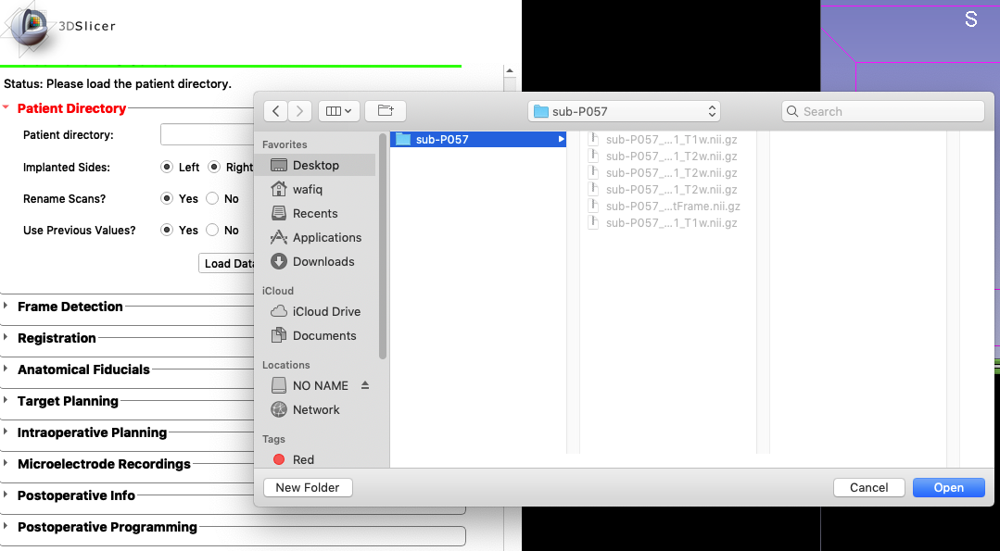
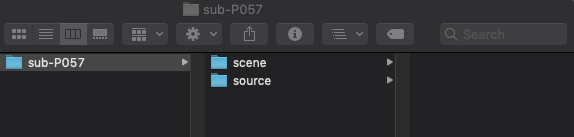
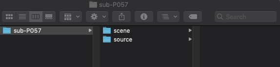

1. Patient Directory¶

Once you’ve loaded DBS Guide into Slicer (see Installation), you can
begin using DBS Guide. The first step is to load the patient’s brain scans
as a directory or file (hence, the name Patient Directory). DBS Guide will
take the directory that you load and make two new folders in your directory
called scene and source. source will contain the original brain
files/scans, while scene will contain all the new coregistered scans,
settings and information.
We will load a sample directory called ‘Sub-P057’ in this tutorial.
- Load the patient’s directory.
An example directory is shown below. Notice, we only select the patient directory/folder and not the files inside the folder. This directory contains folders in the
.nii.gzformat which means each folder is a gzipped folder of NIFTI (Neuroinformatics Technology Initiative) files. NIFTI files are files of MRI scans.
- Select the options:
- Implanted Sides
Is the surgery unilateral or bilateral? Select left and right sides of the brain accordingly.
- Rename Scans?
This option is strongly recommended. In the
sourcefolder that DBS Guide creates, the new scans will have a different file extension will make a new folder in your directory with the coregistered scans once you’ve loaded them.- Use Previously Stored Values?
This option is recommended. If the patient directory had already been used in DBS Guide, you can load the directory and the module will pick up right where you left off.
Once you click
Load Data, the following screen will appear:
- Select the right info:
Date Patient Name/ID Surgeon
 
Note
- There are two folders now in your patient directory:
- scene
(contains data/scans that will be edited)
- source
(contains original brain scans. This folder won’t be modified so that you don’t lose the original scans)
- Patient Directory Loaded Successfully
Now it’s time to move on to Frame Detection